JCG Tough Welding

A cyberpunk-inspired welding machine concept, created for NLG's industrial design challenge.
This project was designed for NLG, an electric welding machine company, with a Cyberpunk-inspired theme. I'm grateful to the client for providing such a fascinating concept, which allowed me to explore bold and creative designs during the early stages. Although this design was ultimately not selected due to cost considerations, I successfully completed the project with enthusiasm and dedication.
For this project, I utilized Artificial Intelligence to enhance my workflow, streamlining the conceptualization of details and generating unexpected creative outputs. Combining these insights with my practical experience in industrial design, I developed a compelling design. I also want to express my gratitude to the factory and mechanical teams for their valuable feedback on feasibility and their helpful suggestions throughout the process.
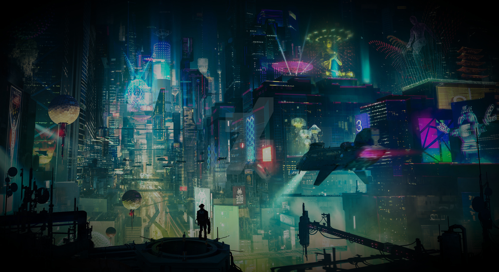
For this NLG design challenge, the theme of Cyberpunk became the starting point for reimagining what an industrial welding machine could be.
Cyberpunk is a world shaped by contrast: dark urban spaces, intense neon colors, Eastern cultural symbols, and highly mechanized environments. Within this visual language, Hanzi characters appear like digital calligraphy, becoming part of the city's identity and communication system.
I translated these elements into the product's design language. The rugged body structure reflects industrial machinery and mechanical strength, while the high-contrast teal and yellow color palette captures the energy of neon city lights. The Hanzi-inspired graphic details add a distinctive cultural layer, giving the machine a stronger identity beyond pure function.
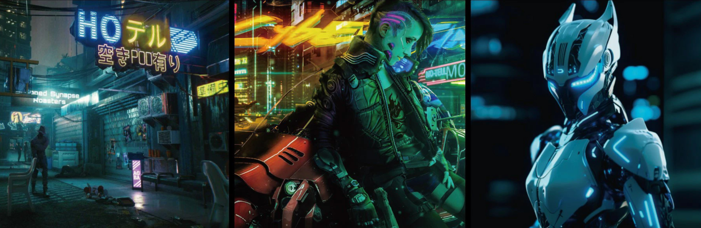
Industrial machinery (wildly imaginative forms)
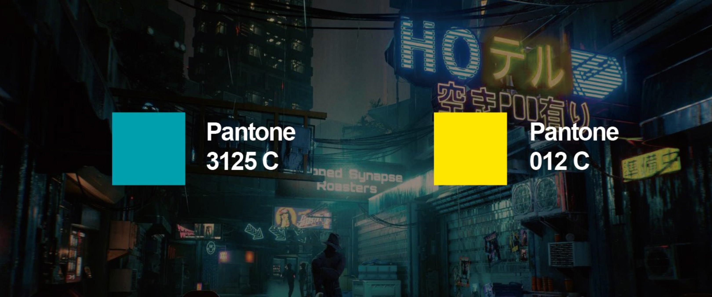
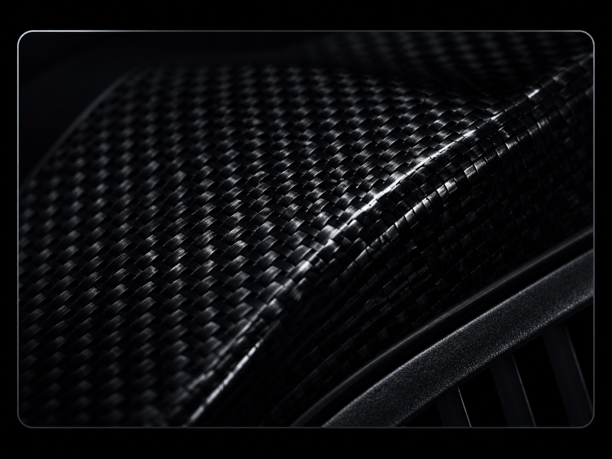
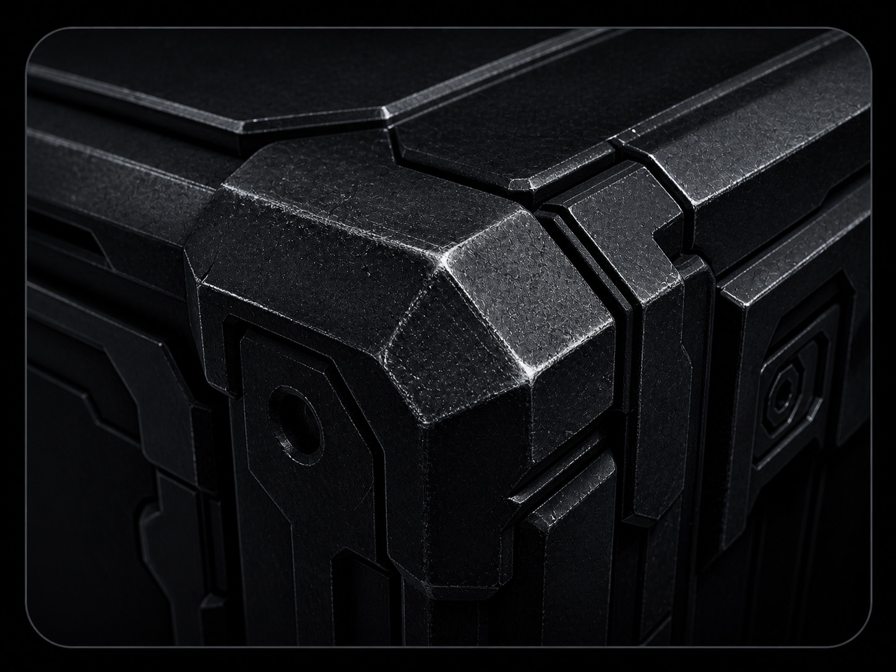
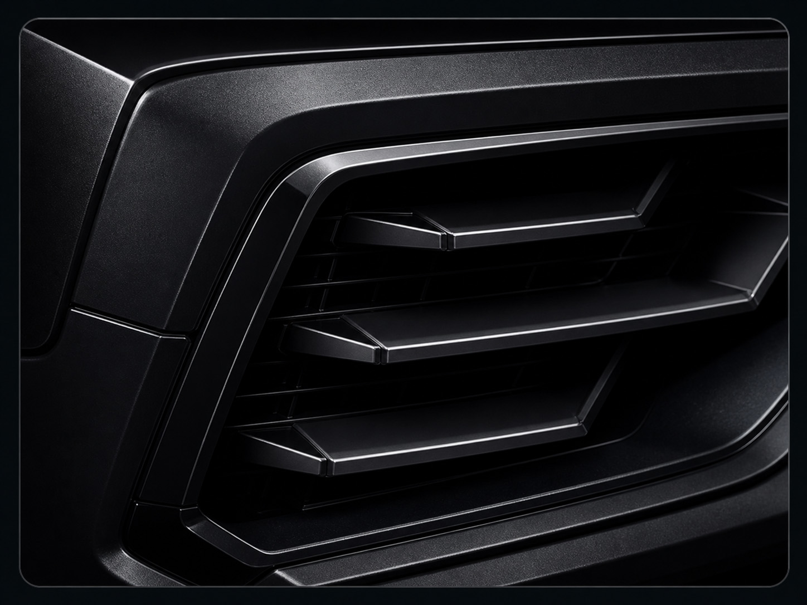
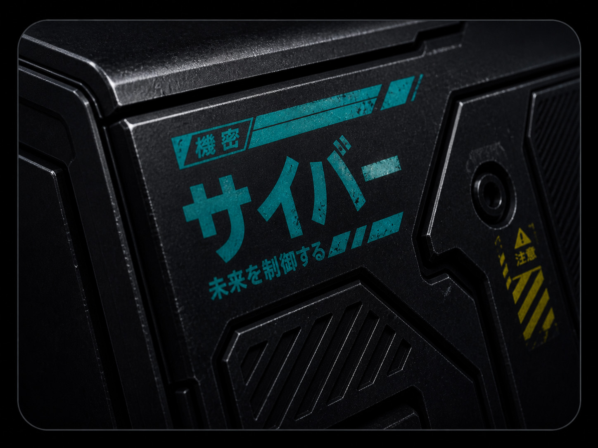
The theme is called Ying-Han series and inspired by Chinese language. The name "Ying-Han" is inspired by the Chinese phrase 硬漢, meaning "tough guy." The Chinese character 焊, meaning welding, shares the same pronunciation, hàn.
Therefore I decided to combine them to become "硬焊"(Ying-Han). Used the meaning of tough, welding as the theme for the new product.
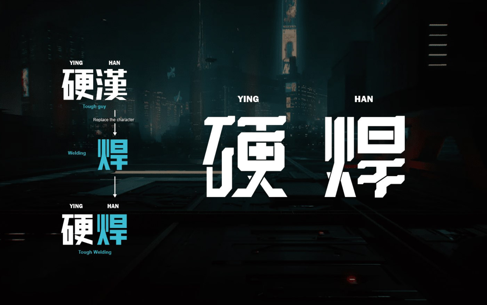
I drew some drafts of the enclosure outline. And used Artificial Intelligence tool(Stable Diffusion) to help me explore the enriching detail of the cyberpunk style. After the AI generated initial ideas, I refined them based on production feasibility.
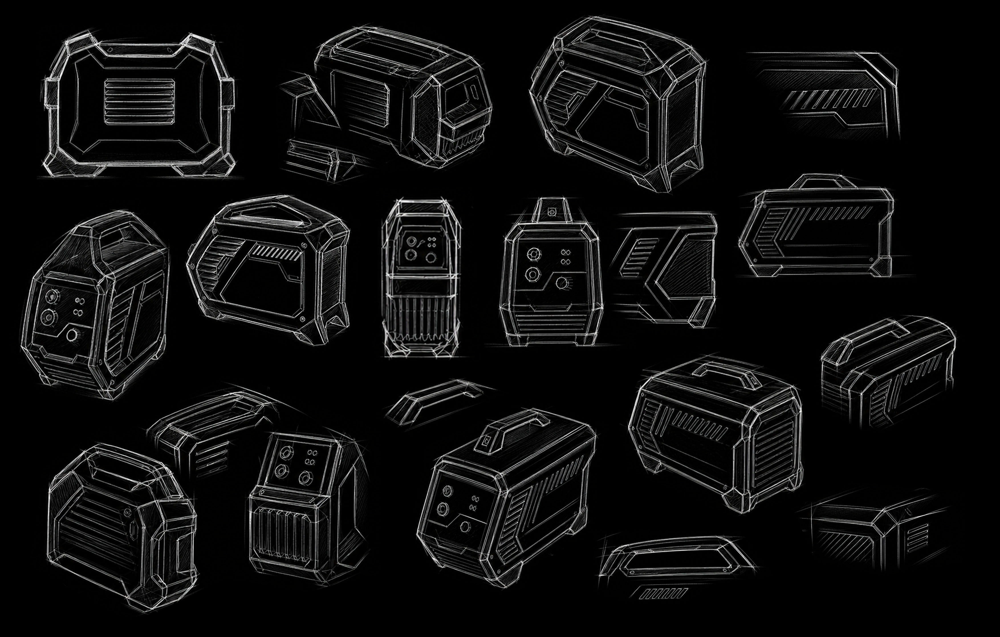

Used AI assistance to generate inspiration through Stable Diffusion.
Color-changing ink shifts from teal to yellow as the machine heats up, turning the Hanzi graphic into a functional temperature indicator.
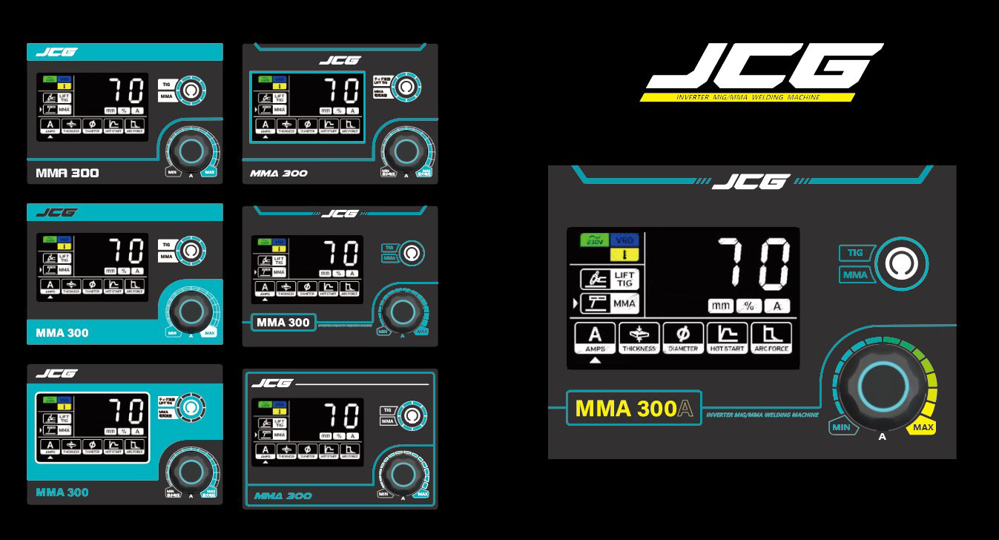
The control interface was developed through multiple layout iterations, aligning usability, hierarchy, and the cyberpunk-inspired visual language.
Precision modeling, preserving the original design intent.
Constructed a 3D model based on key factors including PCBA placement, thermal conditions, molding feasibility, and other critical considerations such as ground clearance, interior space optimization, and ensuring efficient airflow.
User experience was a priority—handles were designed with ergonomic proportions for comfortable gripping, and the plastic finishes incorporate an anti-slip texture for enhanced functionality.
Ensured all surfaces achieved G2 continuity, maintained consistent plastic thickness, and included proper draft angles to meet manufacturing requirements. Despite numerous design constraints, I focused on maximizing detail, achieving harmonious proportions, and realizing my vision for ideal aesthetics.
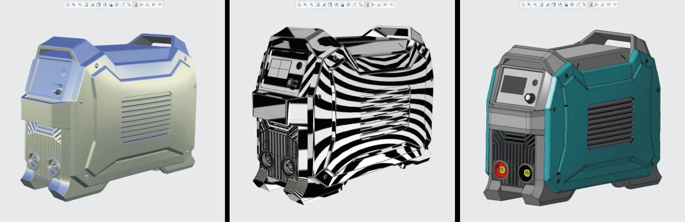
Through practical experience, I evaluated the production feasibility of the 3D model.
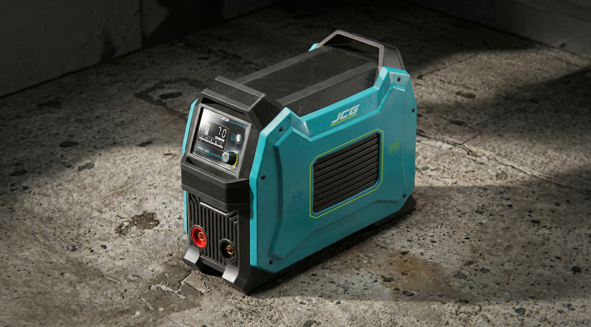
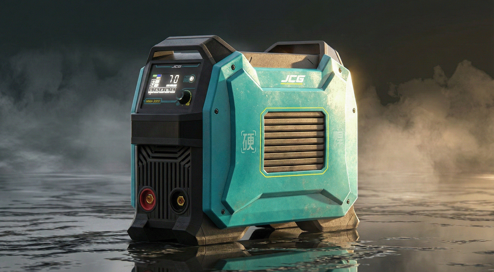
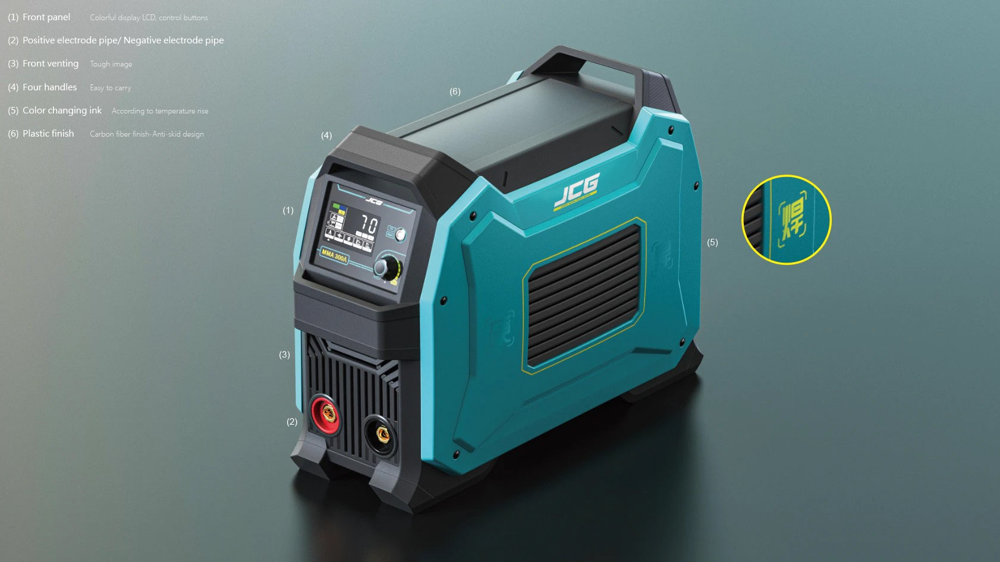
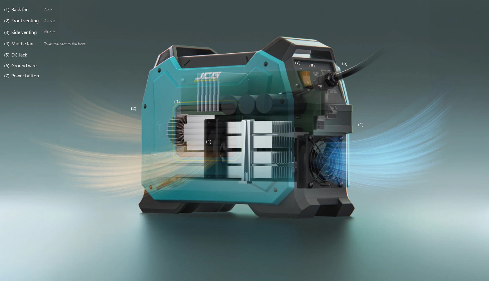